My main project is Anuvad, a subject-aware translator for PDFs, photos, documents and audio. Name a subject, and it writes the way an expert in that field would. I built it by voice: I spoke every request through Wispr Flow, Claude Code wrote the code, and I tested each version and decided what came next.
Copy text out of many Hindi PDFs and you get gibberish, because they're typed in old fonts such as Kruti Dev. This is what a Hindi sentence can look like:
Ordinary translators can't do anything with that. Anuvad reads each page as an image, the way a person would, so old fonts and scanned pages work. Then it keeps the headings, lists and tables, and lets you edit, refine and download the result.
117languages, either direction
8kinds of input, from PDF to voice
12versions released
7days from first commit to v1.11
A real result: a Hindi page about music on the left, and its English translation on the right, with the headings and numbered list kept and terms like "shrutis (microtones)" explained.
What makes it different
It knows what you're reading about
Most translators treat every document the same, so a music textbook and a legal notice get the same everyday words. Anuvad doesn't. Type one word into the Subject box, such as Music, History, Law or Medicine, and the whole translation changes how it thinks: it writes the way an expert in that field would.
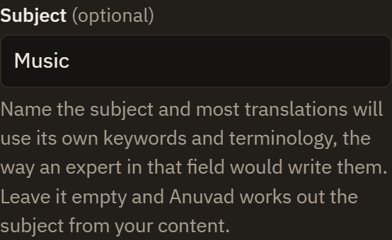
One optional box, for any subject you can name.
The field's own keywordsIt uses the terminology that textbooks, scholars and professionals in that subject actually use, not general everyday words.
The right meaning, every timeWhen a word has several meanings, it chooses the one it has in your subject.
Names and notation done properlyIt recognises the field's concepts, names and works, and follows its conventions for units, notation, dates and citations.
Terms kept and explainedTechnical terms can stay in place with their meaning beside them, stay as they are, or be fully translated. You choose, and each one is spelled the same way throughout.
No subject? It works it outLeave the box empty, and Anuvad identifies the field from your content, then translates with that field's terminology.
Why this matters: one word, different subjects
Hindi words like these change meaning completely with the subject. These are the kind of words the Subject box is there to get right.
Hindi word
In everyday use or another field
In the subject
ताल
a pond or lake
Music: the rhythmic cycle of a composition
धारा
a stream or current of water
Law: a section of an Act, as in "Section 144"
स्वर
Grammar: a vowel
Music: a musical note
It also works with Explain mode and Word mode: in a dictionary lookup, the subject's meaning comes first.
Every feature
Everything it does
Each of these started as something I said out loud. The pictures are of the real app.
Reads almost anything
Drop in whatever you have. Files can be mixed, and they're translated and downloaded as one combined document, each with its own heading.
PDFs, including scans and old Hindi fonts
Photos and screenshots: press Ctrl + V to paste, or take a photo on a phone
Word, PowerPoint and text files, with one page per slide
Audio: upload a recording, or record yourself
Each file gets its own bubble with a ✕, so you can remove one without touching the rest.
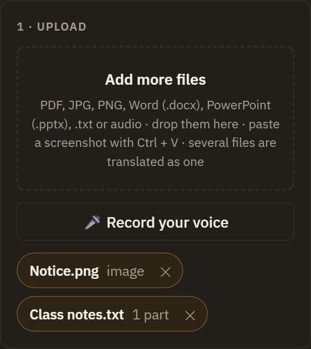
117 languages, any direction
Hindi to English is where it began, but any pair works: Hindi to Urdu, Bengali to English, French to Hindi.
Detect automatically works out the original language
Swap flips the two languages in one click
Your recent languages stay pinned at the top of the list
Right-to-left output for Urdu, Arabic, Persian and Hebrew, on screen and in downloads
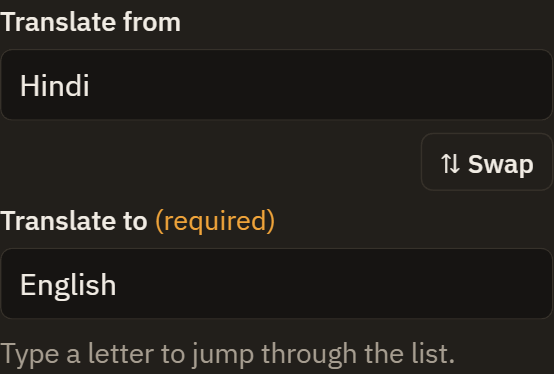
Text mode
No file? Type or paste up to 20,000 characters and get a translation beside it, with the same options and downloads as files.
Here, Anuvad detected the English by itself and even wrote my name correctly in Hindi.
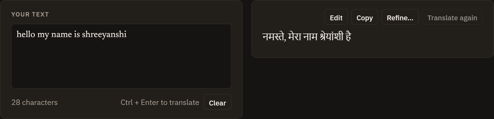
Word mode: a dictionary card
Type one word or a short phrase, in any language, and get a full dictionary card rather than a bare translation.
Meanings grouped by part of speech
Example sentences with translations
Transliteration and pronunciation, plus a Listen button
Synonyms, opposites, word forms and usage notes
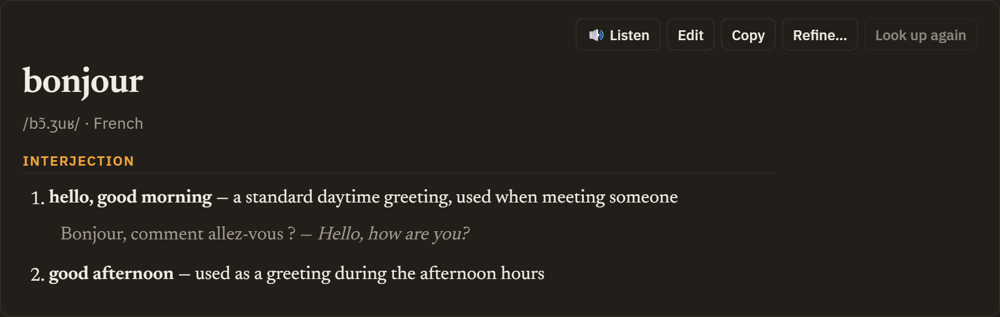
Refine by instruction
A first translation is rarely the last word. Select any sentence, click Refine… and say what you want, such as "more formal", "simpler English" or "keep terms in Hindi".
Only that part is rewritten. Undo change brings the old version back, and you can also refine every page at once.
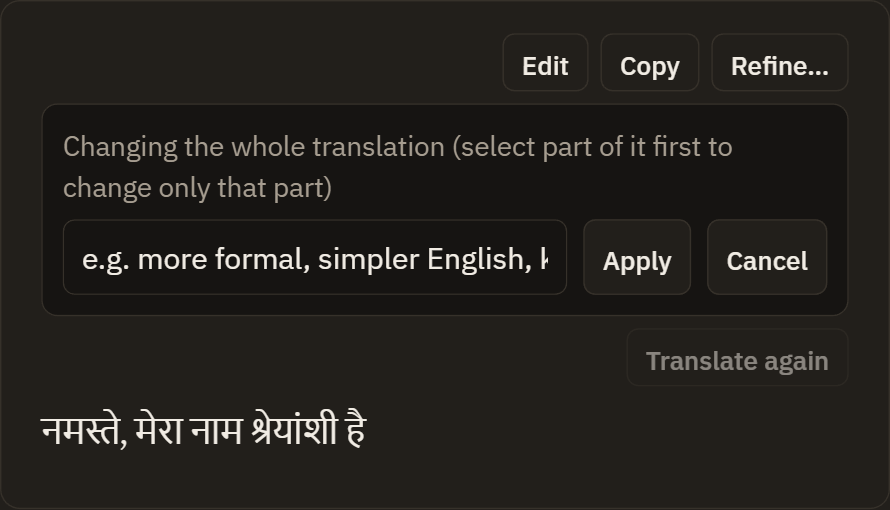
Explain mode, for students
Sometimes you don't want a translation, you want to understand. Choose Explain in simple words, and any page, photo, recording or text becomes four clear parts, in your language:
In short: the main point in two or three sentences
Explanation: the content in everyday words, with examples
Key terms: each important term and what it means
Remember: the points worth keeping
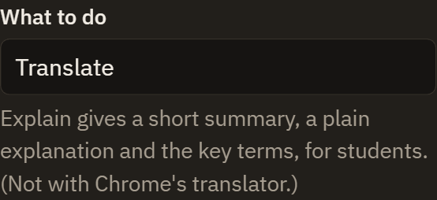
Your words, your tone
A glossary fixes a term once, and every new translation follows it. Fix a word everywhere also replaces it in the translations you've already made, instantly.
A tone setting matches the original, or makes it formal, simple, academic or literal.
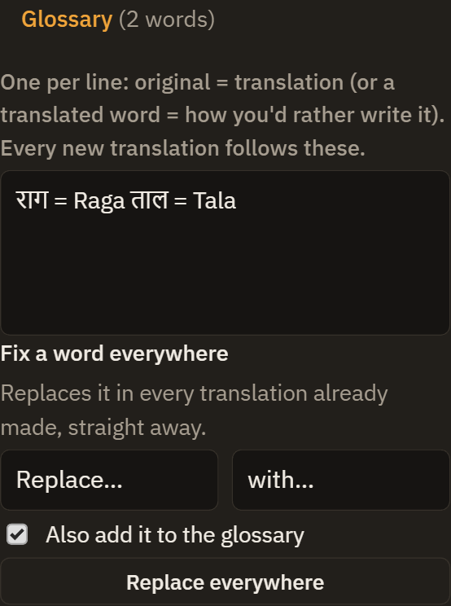
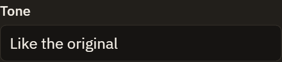
Downloads that are ready to use
PDF with text you can select, search and copy, even in Hindi and Urdu
Word (.docx) with real headings, lists and tables
.html and .md, or copy everything at once
Include the originals for a bilingual copy, with each original page before its translation
Files save straight to the folder you choose, through your computer's own Save window.
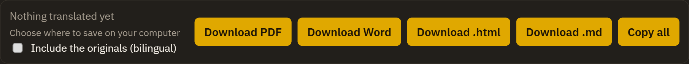
Your work is never lost
Files, translations, edits and settings stay in your browser, so a refresh or a closed tab loses nothing. History keeps your last 30 translations to reopen any time.
There's no server and no sign-up: your files go only to the AI engine you choose.
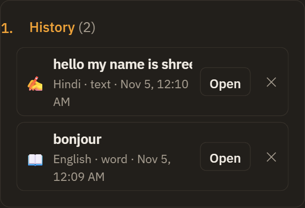
Your choice of AI engine
Use Google Gemini for free with your own code, which takes about 2 minutes to get with the step-by-step help on the page. Or use Anthropic Claude with your own key, or Chrome's built-in translator for plain text, with no code at all.
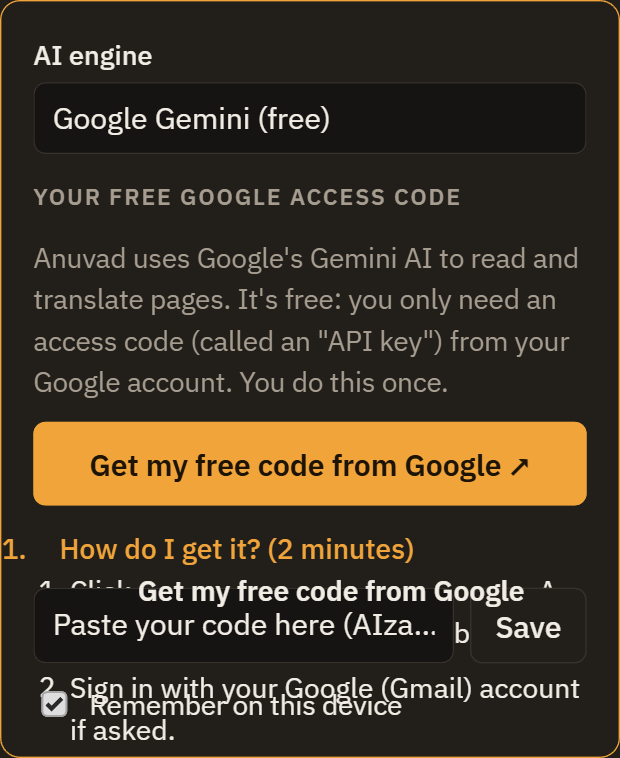
A guide on your first visit
New visitors get a 9-step tour that dims the page and points at each part, with Back, Next and Skip. How it works replays it any time, and it works on phones and with the keyboard.
The language you want is required and never assumed: if it's empty, a friendly pop-up asks, and the work then carries on by itself.
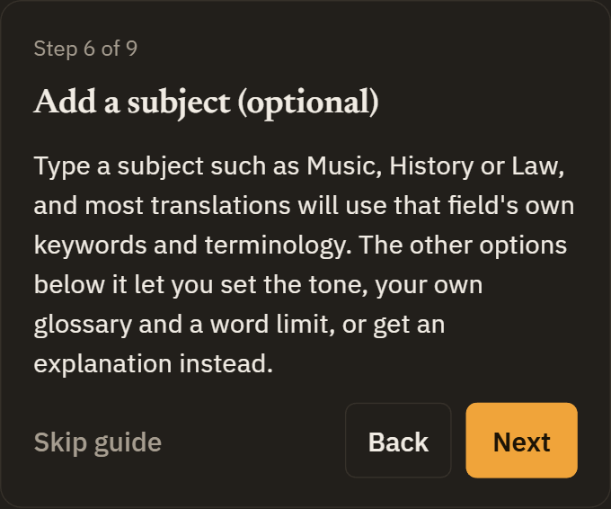
How it was built
Spoken, then built
These are my actual requests, dictated with Wispr Flow while I had the site open in front of me. Speaking meant I could describe a problem the moment I saw it, in the same words I'd use with a person.
"When I'm saving a file as a PDF, why is the print option opening? I want you to save it to the file on the computer and show the computer option, not the print option."
What changedPDFs are now made inside the browser and saved through the computer's own Save window.
"When I translated it to French, the second page did not translate well."
What changedEach page is now checked, and any text left in the original language gets a second pass.
"After refreshing, it's still not coming back. Everything is just vanishing."
What changedFiles, translations and settings are now saved in the browser, and come back after a refresh.
"First time, I should get the hints and a guide pop-up type of thing to know how this app works."
What changedFirst-time visitors get a 9-step guide that points at each part of the page.
Quality
Built fast, then checked properly
Before submitting, I had Claude Code test the live site from start to finish, the way a reviewer would, and fixed what it found:
Security hardened. Links in translations can now only be web or mail links, HTML shows as plain text, and pictures from other sites never load, because an AI reading outside documents shouldn't be trusted blindly.
A security policy and library checks. The page limits what it can load, and each library is checked against a known checksum.
Automated tests run on every push through GitHub Actions.
Accuracy details. Word limits add up across pages, and the Word download keeps text that looks like code.
Timeline
One week, one request at a time
First version: a Hindi syllabus PDF into English. Then any Hindi document, subject-aware terms and a word limit.
A word limit that's actually enforced, direct PDF download, and several PDFs translated as one.
117 languages, work kept after a refresh, Text mode, and a dictionary card for single words.
Photos, Word and PowerPoint files, Refine, History, Word downloads, searchable PDFs, voice, Explain mode, a choice of AI engine, the first-visit guide, and security hardening.
Try it yourself
Open Anuvad, get a free Google access code in about 2 minutes using the steps on the page, and translate anything. In recent desktop Chrome, you can also translate plain text with no code by choosing Chrome translator.
Built with: Wispr Flow, Claude Code, HTML, CSS and JavaScript, PDF.js, the Gemini API, and GitHub Pages.